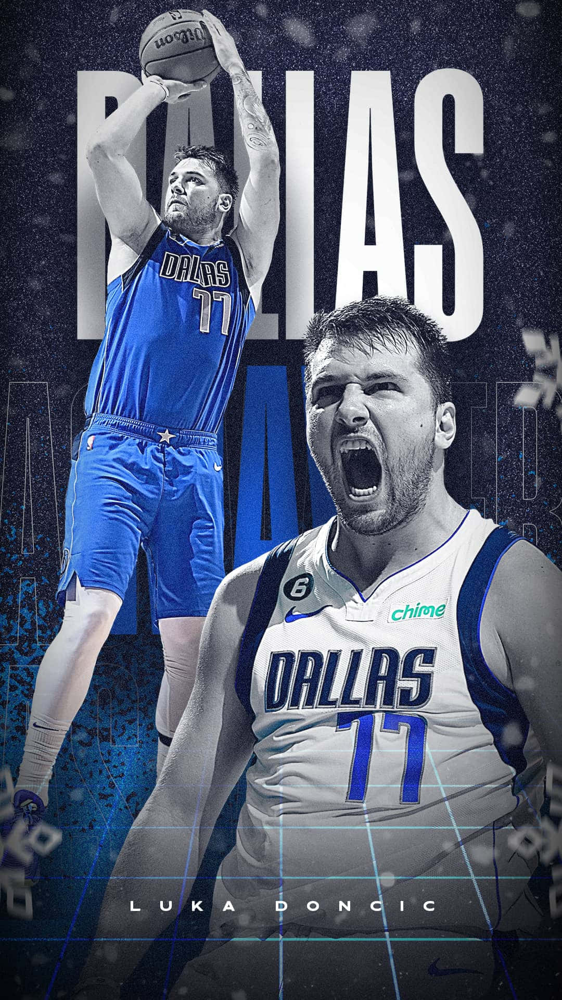

The Dallas Mavericks are ready to take the NBA by storm this season, aiming for another championship with some exciting new additions to the roster. With the arrival of Klay Thompson, Naji Marshall, and Quintin Grimes, the team has bolstered its talent and depth.
 ;
;
Returning Stars
Returning stars Kyrie Irving, P.J. Washington, and Dereck Lively are bringing their championship experience to the table once again. And of course, Luka 'The Don' Dončić is back—stronger, faster, and more seasoned than ever. His command of the game and leadership will be pivotal as the Mavericks chase another title.
Why Fans Should Be Excited
The Dallas Mavericks have assembled a team with a perfect blend of experience and fresh talent, making them strong contenders for the championship. Luka Dončić is not only an incredible individual talent but also a leader whose skill and determination lift the entire team. With key additions like Klay Thompson and the return of seasoned players, the Mavericks have both offensive firepower and depth, making this season a promising one for fans.
Get ready, Mavs fans. Luka's rise to dominance could make this year legendary.
Key Facts About the Mavericks
| Player | Position | Key Strength |
|---|---|---|
| Luka Dončić | Point Guard | Leadership & Scoring |
| Klay Thompson | Shooting Guard | Three-Point Shooting |
| Kyrie Irving | Point Guard | Ball Handling & Playmaking |
Inspiring Quotes
"Hard work beats talent when talent fails to work hard." - Kevin Durant
"You miss 100% of the shots you don't take." - Wayne Gretzky
"Success is no accident. It is hard work, perseverance, learning, studying, sacrifice and most of all, love of what you are doing." - Pelé